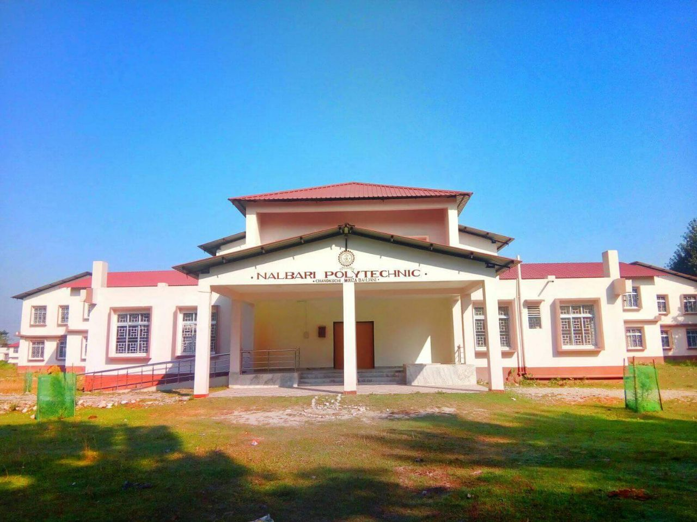

Nalbari Polytechnic is a Government diploma college located in the district of Nalbari, Assam state of India. This polytechnic college is located at Chandkuchi.
Diploma Courses Offered
A polytechnic college offers diploma courses that are short term courses (usually 1-3 years in duration) that focus on training a person in a particular field. Nalbari Polytechnic is a diploma college that offers 3 full time diploma engineering courses. All the courses of this college shown here is approved by All India Council for Technical Education (AICTE), New Delhi.
Full Time Diploma in Computer Science and Engineering (1st shift)
Full Time Diploma in Electrical Engineering (1st shift)
Full Time Diploma in Printing Technology (1st shift)
Nalbari Polytechnic college offers a diploma in Computer Science and Engineering. This course falls under the Engineering and Technology programme. This course is affiliated under Directorate of Technical Education, Assam. This course is offered in 1st shift and is a Full Time diploma course.
This college offers a diploma in Electrical Engineering. This course falls under the Engineering and Technology programme. This course is affiliated under Directorate of Technical Education, Assam. This course is offered in 1st shift and is a Full Time diploma course.
This college offers a diploma in Printing Technology. This course falls under the Engineering and Technology programme. This course is affiliated under Directorate of Technical Education, Assam. This course is offered in 1st shift and is a Full Time diploma course.